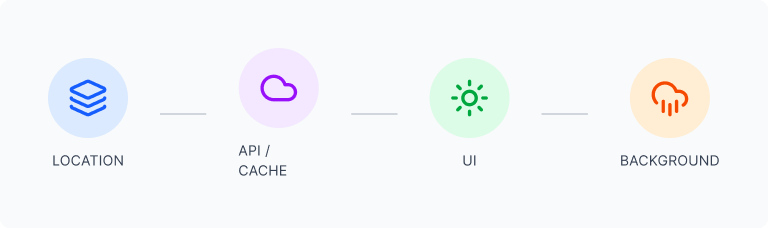

Met Office weather app: complex data, simplified
A responsive, location-based weather app using the Met Office API. The challenge was making complex meteorological data feel simple and trustworthy, without stripping away the detail people actually need.
The challenge
Weather apps are everywhere, but most fall into one of two failure modes: they overwhelm users with data they don't need right now, or they strip things back so far that you have to hunt for anything useful. I wanted to explore the middle ground.
The design goal: give people the one or two things they actually need at a glance, while keeping detailed data one step away. Not hidden, not in the way.
This was also my first time working directly with an external API (the Met Office data feed), which added technical constraints that shaped several design decisions: a 360 requests/day rate limit, variable data structures, and the need for graceful fallbacks when values were missing.

My role
Responsibilities
- UX and UI design: wireframes to high-fidelity
- Information architecture and data hierarchy
- Responsive layout across mobile and desktop
- Build and launch using Lovable
- API integration, caching strategy, error states
- Post-launch debugging and iteration
Tools
- Figma: design and prototyping
- FigJam: UX flows and information architecture
- Lovable: no-code build and deployment
- Met Office API: live weather data
User and goals
Who uses a weather app, and what do they actually need?
The primary user is a busy person who needs quick, reliable weather information to plan their day, not to explore data for its own sake. They switch between locations and expect accuracy and speed.
"I need to know if I should bring an umbrella and what the temperature will be when I leave work — without wading through pages of irrelevant data."
User goals
- Know immediately if I need a coat or an umbrella
- Scan the next few hours without decoding icons
- Check the week ahead without switching screens
- Save and switch between multiple locations quickly
- Have it work as well on my phone as on desktop
Design goals
- Clear information hierarchy: most important data first
- Reduce cognitive load through visual grouping
- Dashboard-style layout that scales across breakpoints
- Dynamic backgrounds that reflect real conditions
- Location persistence across sessions
Design decisions
Working with live API data added constraints most design exercises avoid: the layout had to accommodate variable data lengths, missing values, and different location responses gracefully.
Current conditions as the hero, always
Temperature, feels-like, and a plain-language condition description sit above everything else. No icons to decode, no scrolling to find the basics. The number you need is the first thing you see.
Hourly and daily views as layers, not tabs
Rather than hiding detail behind navigation, the hourly forecast lives directly below the current conditions, and the weekly view below that. Each layer answers a different question without requiring the user to make a choice first.
Location selector at the top, always visible
The location label doubles as the selector, positioned prominently at the top of every view. Users can switch locations with a single tap without navigating away or scrolling. It also persists across sessions: returning users see their last location immediately.
Dynamic backgrounds based on weather conditions
The background adapts to current conditions (overcast, sunny, rainy), giving users an immediate visual sense of the weather before reading a single number. This also reduces reliance on iconography, which often reads differently across contexts.
Responsive layout driven by data priority, not just reflow
On mobile, the hourly strip collapses to a horizontal scroll. On desktop, it expands into a full dashboard panel. The same data, reorganised by what fits and what matters most at each screen size, not just reflowed.


Build, API and iteration
Integrating the Met Office API was new territory for me. It meant understanding data structures I hadn't designed, handling edge cases where values were missing or formatted unexpectedly, and making design decisions based on what the data could actually deliver rather than what I'd assumed.
Designing around real data taught me more about defensive design than any brief could. When the API returns nothing, the interface still has to make sense.
The API has a 360 requests/day limit, which required a smart caching strategy: responses are cached per location for one hour, reducing API calls significantly while keeping data fresh enough to be useful.

I designed fallback states for loading, empty responses, and location permission denial, turning what could have been error screens into clear, helpful moments that kept users oriented.
Post-launch: gradient overlay blocking taps on mobile
After launch, a visual enhancement (a subtle gradient overlay to improve text readability on dynamic backgrounds) was inadvertently blocking click events on the location selector on certain mobile devices. The fix was adjusting the CSS pointer-events property on the overlay layer so interactive elements remained fully clickable without losing the visual improvement. User testing confirmed the fix worked across all target devices.
Outcome
The project delivered a live, location-aware weather product, designed and built independently. The caching strategy solved a real technical constraint without degrading the user experience. The post-launch iteration demonstrated the full cycle (design, ship, discover, fix), which is often more instructive than a project that launches perfectly.
What I'd do differently
I'd run structured usability tests around the hourly to daily forecast transition: that handoff is where users most often lose their sense of what timeframe they're looking at. I'd also instrument scroll depth from the start to understand whether the weekly forecast is actually being used, or whether the above-the-fold design answers most questions before people get there. And I'd have caught the gradient overlay issue in mobile testing before launch, not after.